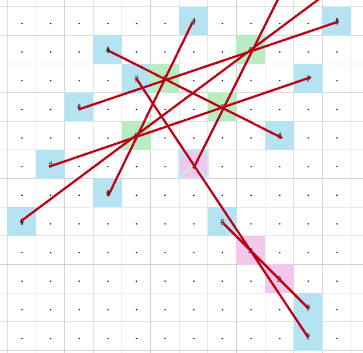
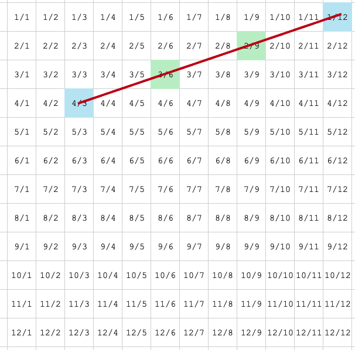

Advent of Code - Day 8 - Missing Operators (Ruby)
The first time I read through the riddle, I was like: “Phew, no way, I’m going to skip this!” I looked at the example and the description, and it didn’t make sense at all. But when I’m stuck like that at the very beginning, the best approach to get a grip is: Visualize! (A concept I didn’t learn from Daniel Bourke’s course about machine learning, but he perfected it!)
However, I thought it might be a good idea to use Ruby this time — my first time with this language. I won’t bother you with the environment setup. Again, I’m just using a containerized environment, which makes things so much easier.
Solution to the First Part
So, what is this about? It’s about finding siblings on a surface, connecting them with a straight line, and then extending this line to find two symmetric points. The total number of all those points forms the solution to this riddle. The green and red cells represent two categories of siblings on the map, and the blue cells represent the symmetric points (called antinodes) that we need to find. If you connect them (with red lines), you’ll see how all of them pass through two cells of the same color:

Looks difficult, right? Don’t tell me, it took me a while to understand the “gibberish” of the riddle – no offense, riddle master.
But wait until we add row and column numbers to the map and focus on just one group:

Now it seems quite easy: We just need to somehow identify the row and column distance between two siblings and use that to place the corresponding antinode.
Let me just throw my solution into the ring. It’s not the most elegant, but it gets the job done:
- First, I use two loops to find two siblings.
- Then, I calculate the row and column indexes for both siblings.
- From there, I can calculate the row and column indexes for both
antinodes. - Finally, I just check if they are within the boundaries before adding them to a dictionary.
from_char_array.each_with_index do |from_char, from_index|
next if from_char == "."
from_char_array[(from_index + 1)..-1].each_with_index do |to_char, to_index|
next unless from_char == to_char
from_row = (from_index / map_height).floor
from_col = from_index - (from_row * map_width)
to_row = ((from_index + to_index + 1) / map_height).floor
to_col = (from_index + to_index + 1) - (to_row * map_width)
puts "Found couple of #{from_char} at #{from_row}/#{from_col} and at #{to_row}/#{to_col}"
first_antinode_row = from_row - (to_row - from_row)
second_antinode_row = to_row + (to_row - from_row)
first_antinode_col = from_col + (from_col - to_col)
second_antinode_col = to_col + (to_col - from_col)
if first_antinode_row.between?(0, map_height - 1) && first_antinode_col.between?(0, map_width - 1)
antinodes["#{first_antinode_row}/#{first_antinode_col}"] = "#"
end
if second_antinode_row.between?(0, map_height - 1) && second_antinode_col.between?(0, map_width - 1)
antinodes["#{second_antinode_row}/#{second_antinode_col}"] = "#"
end
end
end
If you’re stuck on this one, no worries: I have to admit, although it’s just roughly 20 lines of simple code, it took me a while to initially understand the task and then put everything together, because I was mixing up 0-based indexing, column calculation, and so on.
And because I am already 4 days behind, I didn’t even read the second part and continued to day 9…
What’s up, Ruby?
Rating: 10/12 – underestimated diamond
I was honestly surprised at how easy it is to get something done in Ruby. It seems as simple and straightforward as Python, and if you’re looking for a quick ’n’ dirty scripting language, I’d say Ruby is definitely worth a try.